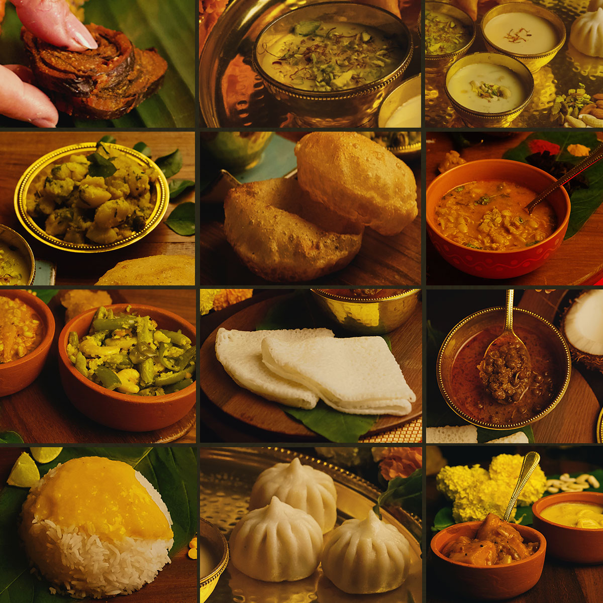
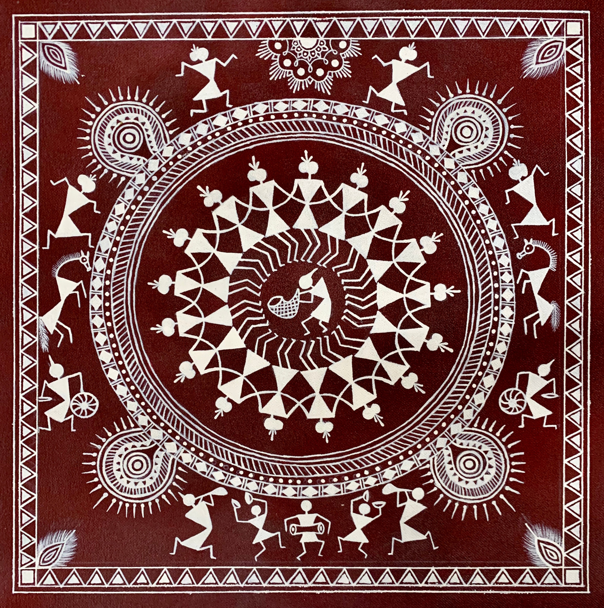

<!DOCTYPE html>
<html lang="en">
<head>
  <meta charset="UTF-8">
  <meta name="viewport" content="width=device-width, initial-scale=1.0">
  <title>Colored Buttons</title>
  <style>
    /* Style your buttons here */
    button {
      padding: 10px 20px;
      border: none;
      border-radius: 5px;
      cursor: pointer;
      margin: 10px;
    }

    .button-gallery {
      background-color: #38a3a5;  /* Light blue */
      color: white;
    }

    .button-register {
      background-color: #ffc107;  /* Orange */
      color: black;
    }
    .button-places {
      background-color:tomato;  /* Orange */
      color: black;
    }
    .button-home {
      background-color: #4caf50;  /* Green */
      color: white;
    }

    .button-contact {
      background-color: #2196f3;  /* Blue */
      color: white;
    }
  </style>
</head>

</html>
    
<body>
   
<nav>
    <a href="website.html"><button class="button-home">Home</button></a>
    <a href="about.html"><button class="button-about">About</button></a>
    <a href="places.html"><button class="button-places">Places to visit</button></a>
    <a href="registration form(wd).html"><button class="button-register">Register</button></a>
    <a href="contact.html"><button class="button-contact">Contact Us</button></a>
</nav>

<section id="about">
            <h2>About Maharashtra</h2>
            <h1>A Land of Rich Traditions</h1>
            <p>Maharashtra boasts a diverse and rich culture, shaped by its long history, various communities, and geographical regions. From the mighty Maratha Empire to the artistic expressions of Warli paintings and Lavani dance, Maharashtra offers a unique blend of tradition and modernity.</p>
            <section class="highlights">
                <article class="highlight">
                    
                    <h3>Festivals</h3>
                    <p>Maharashtra is known for its grand festivals like Ganesh Chaturthi, Gudi Padwa, and Diwali, each with unique rituals and celebrations.</p>
                </article>
                <article class="highlight">
                    
                    <h3>Cuisine</h3>
                    <p>The Maharashtrian cuisine is a delight for foodies, offering a variety of vegetarian and non-vegetarian dishes like Misal Pav, Puran Poli, and Vada Pav.</p>
                </article>
                <article class="highlight">
                    
                    <h3>Art Forms</h3>
                    <p>Maharashtra has a rich tradition of art forms like Warli paintings, known for their geometric patterns and depictions of tribal life, and the energetic Lavani dance.</p>
                </article>
            </section>